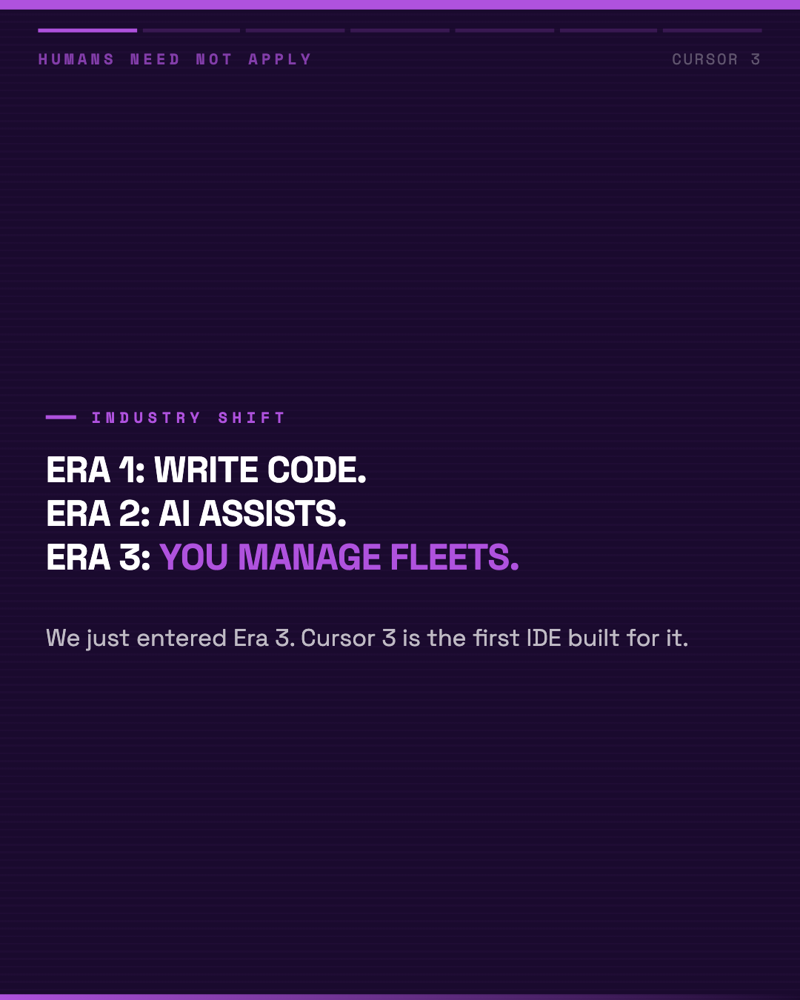
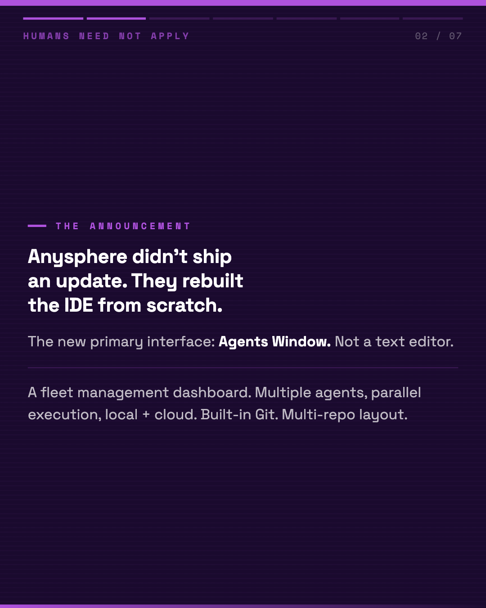
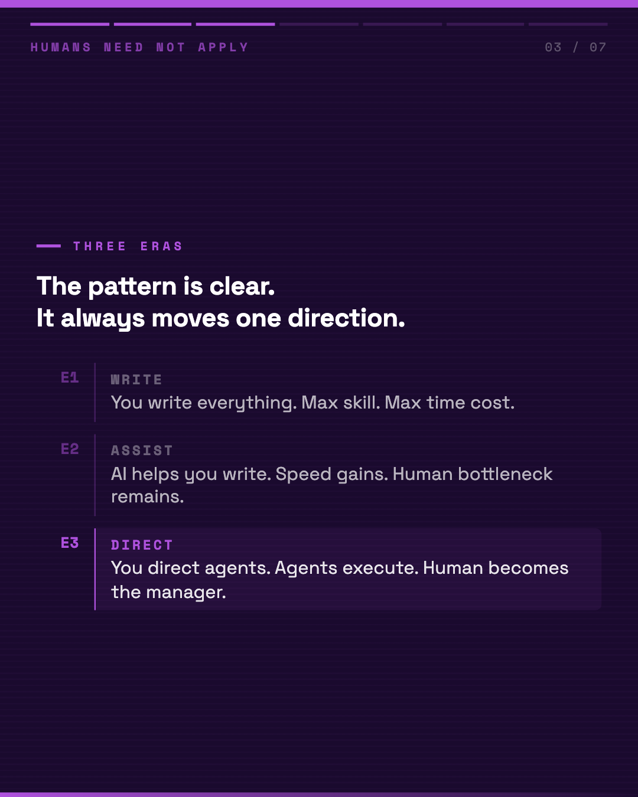
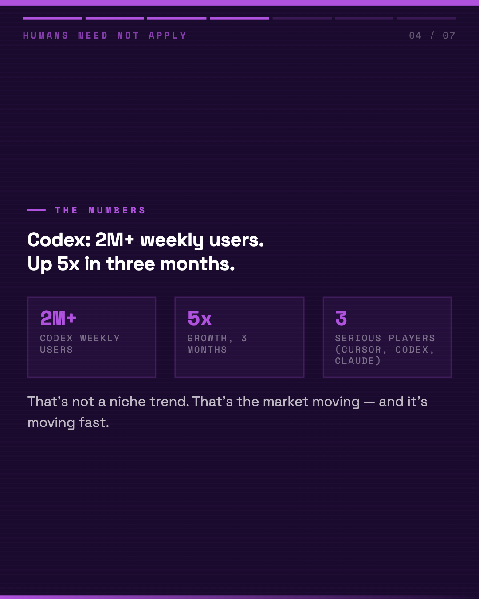
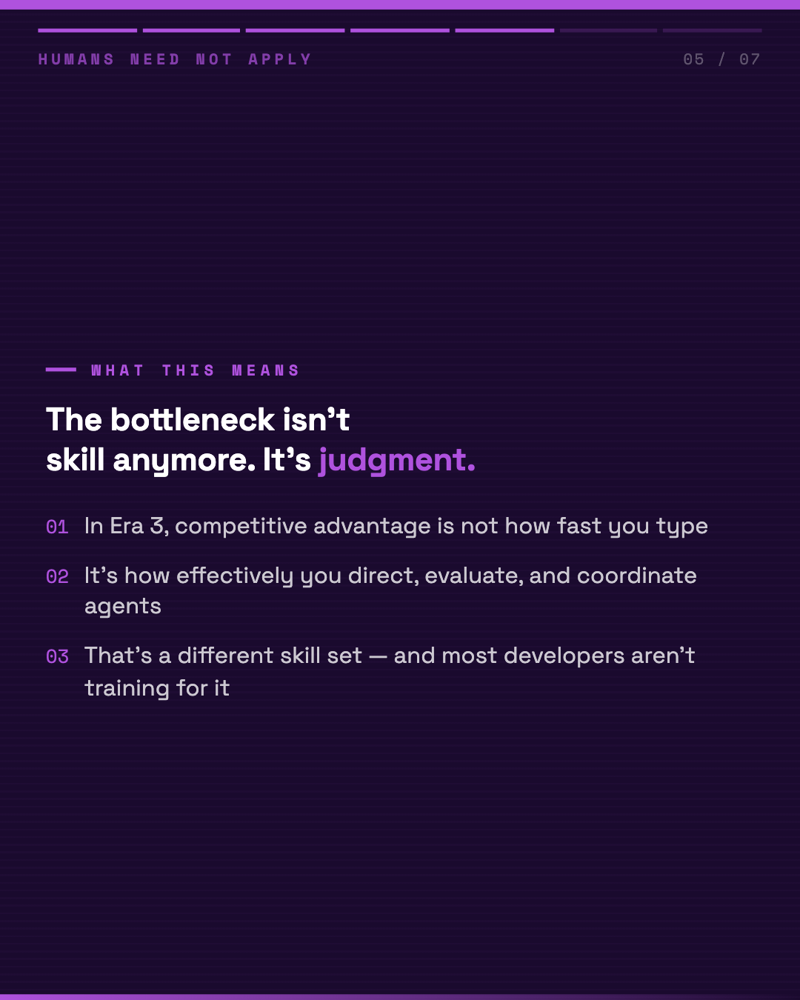
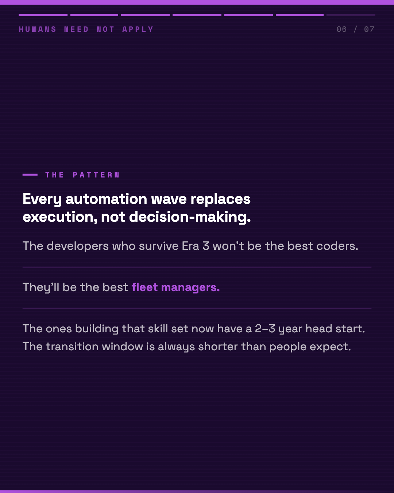
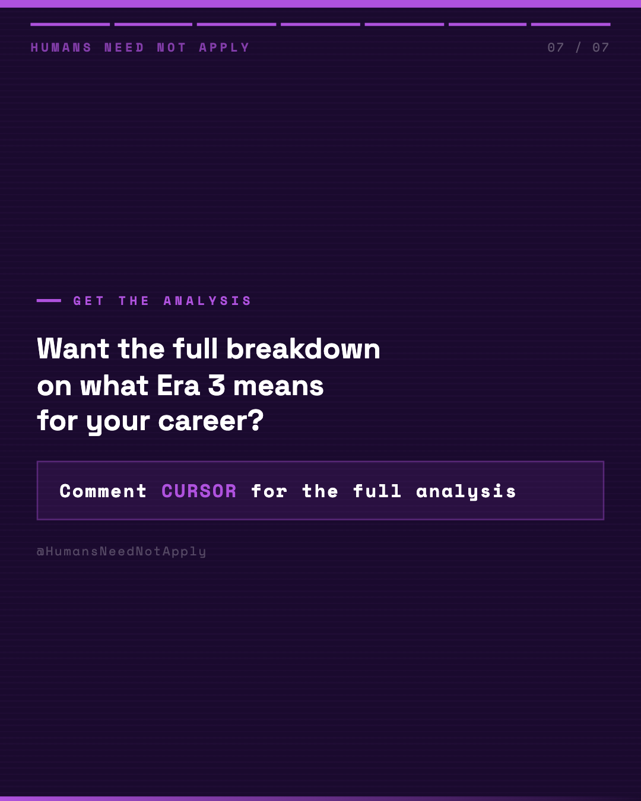

Key Takeaways
01
Anysphere didn't ship an update. They rebuilt the IDE from scratch. — The new primary interface: Agents Window. Not a text editor. A fleet management dashboard for AI coding agents.
Multipl
02
Era 1: You write everything. Maximum skill required. Maximum time cost.
03
Era 2: AI assists your writing. Speed gains. Still a human bottleneck.
04
Era 3: You direct agents. Agents execute. The human becomes the manager.
05
Codex hit 2M+ weekly users. Up 5x in three months. — That's not a niche trend. That's the market moving.
Cursor is competing directly with Claude Code and OpenAI Codex. Thr
06
The bottleneck isn't skill anymore. It's judgment. — In Era 3, the competitive advantage isn't how fast you type or how well you know syntax.
It's how effectively you direc
Analysis
Cursor 3 launched this week. Anysphere rebuilt their IDE from scratch around a specific thesis: software development has entered "Era 3."
The framing: - Era 1: developers write code - Era 2: AI assists developers writing code - Era 3: developers manage agent fleets — agents write the code
The new primary interface is called the Agents Window. It's not a text editor. It's a fleet management dashboard. Multiple AI coding agents run in parallel, local and cloud, with built-in Git and multi-repo layout. You direct. Agents execute.
The market data is worth noting: OpenAI Codex reportedly hit 2M+ weekly users, up 5x in three months. Cursor is competing directly with Codex and Claude Code. Three well-resourced products all betting on the same structural shift in how software gets built.
What's happening here follows the same pattern as prior automation waves. Technical execution gets automated first. The bottleneck shifts upstream — from execution to judgment, from writing to directing.
The uncomfortable implication for software careers: in Era 3, the competitive moat isn't syntax fluency or speed. It's the ability to direct agent fleets effectively — task decomposition, output evaluation, error propagation management across parallel workstreams.
Most developers are still building Era 2 skills. The transition window is opening now.
What's your read on the timeline here — are we actually in Era 3, or is this 2-3 years away from being the mainstream development model?
The framing: - Era 1: developers write code - Era 2: AI assists developers writing code - Era 3: developers manage agent fleets — agents write the code
The new primary interface is called the Agents Window. It's not a text editor. It's a fleet management dashboard. Multiple AI coding agents run in parallel, local and cloud, with built-in Git and multi-repo layout. You direct. Agents execute.
The market data is worth noting: OpenAI Codex reportedly hit 2M+ weekly users, up 5x in three months. Cursor is competing directly with Codex and Claude Code. Three well-resourced products all betting on the same structural shift in how software gets built.
What's happening here follows the same pattern as prior automation waves. Technical execution gets automated first. The bottleneck shifts upstream — from execution to judgment, from writing to directing.
The uncomfortable implication for software careers: in Era 3, the competitive moat isn't syntax fluency or speed. It's the ability to direct agent fleets effectively — task decomposition, output evaluation, error propagation management across parallel workstreams.
Most developers are still building Era 2 skills. The transition window is opening now.
What's your read on the timeline here — are we actually in Era 3, or is this 2-3 years away from being the mainstream development model?
Visual Breakdown






